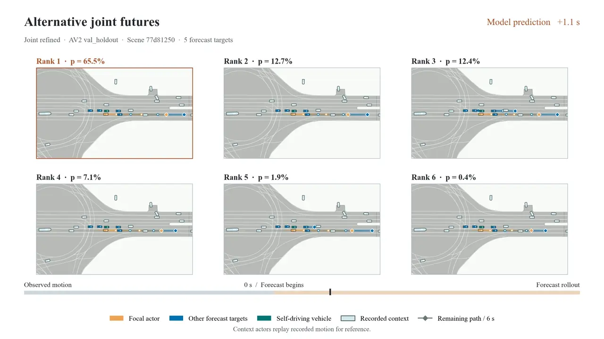

AV2 / Joint forecasting / Future refinement多智能体运动预测联合预测、未来交互细化与整场评分；22,940 个场景的 Best-of-6 FDE 为 1.817 m。查看项目 ↗真实 AV2 场景 · 六候选预测回放
开源项目复现 / VLA / Bench2DriveUniDriveVLA 自动驾驶复现基于官方 2B 权重跑通 CARLA 闭环，展示施工绕行、车辆切入与路口转弯的多视角预测和执行。查看复现 ↗开源复现 · 六路环视与闭环规划回放